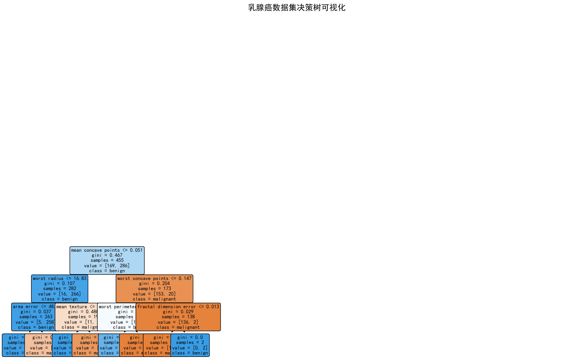
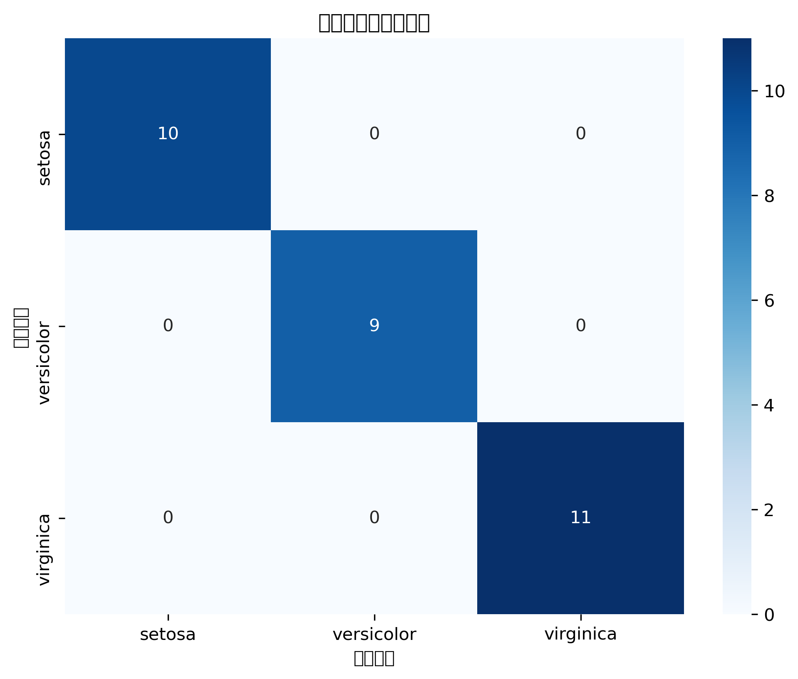
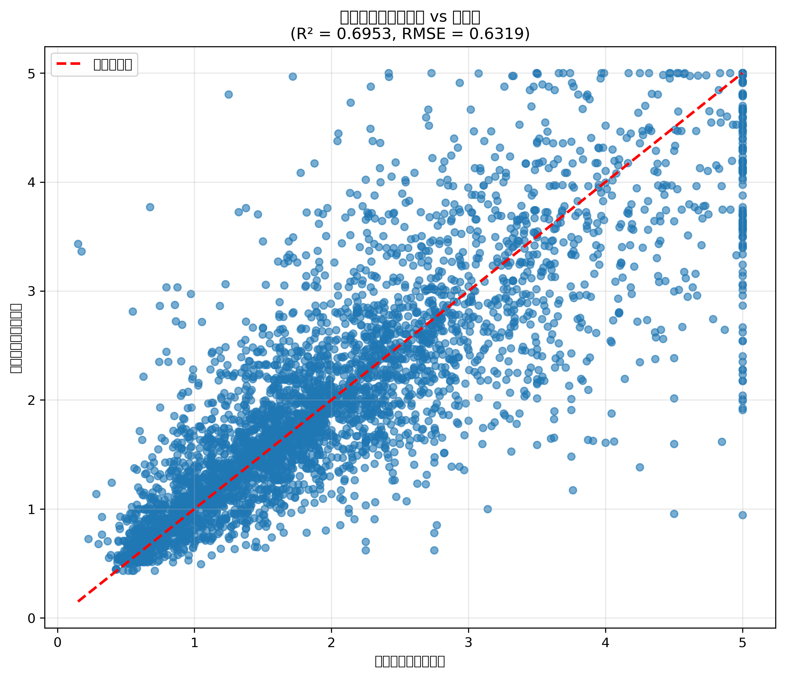
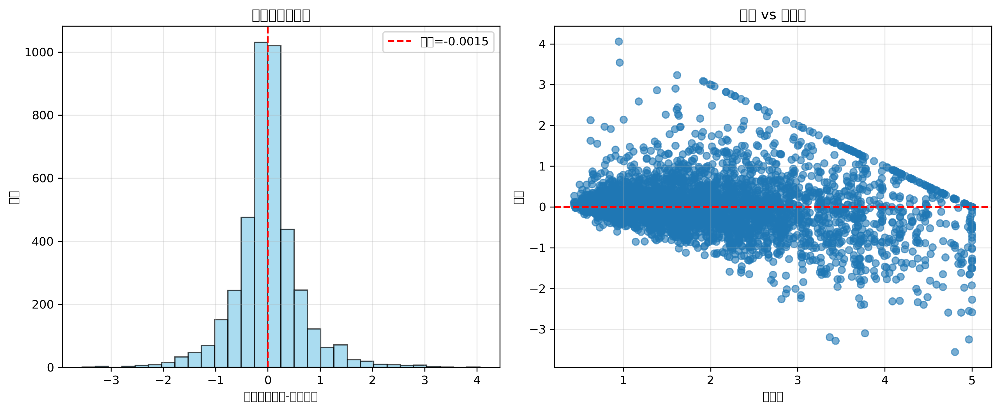
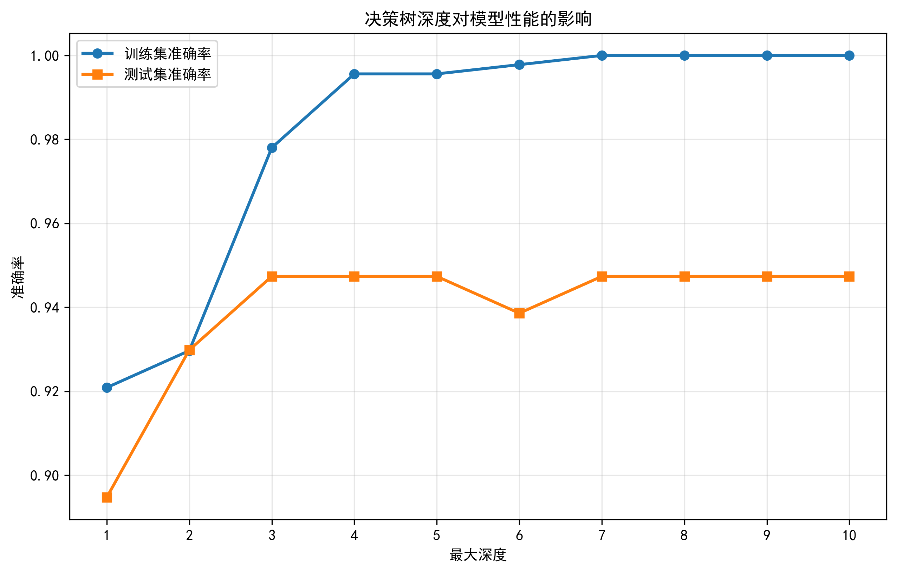
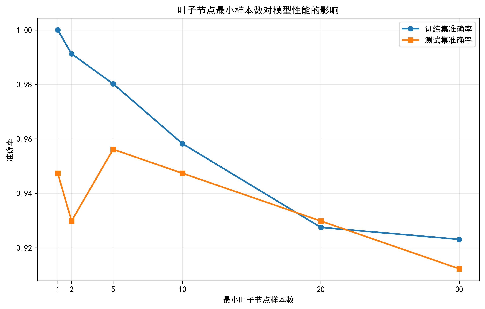

决策树算法原理
理解决策树的核心概念和学习过程
决策树算法对比
| 算法 | 特征选择标准 | 适用场景 | 优点 | 缺点 |
|---|---|---|---|---|
| ID3 | 信息增益 | 分类问题 | 简单易懂，计算快速 | 偏向选择取值较多的特征 |
| C4.5 | 信息增益比 | 分类问题 | 克服ID3的偏向性 | 计算复杂度较高 |
| CART | 基尼系数/MSE | 分类和回归 | 支持连续值，可处理回归 | 容易过拟合 |
信息熵
H(D) = -∑ pk log2 pk
衡量数据集的纯度，熵值越小，数据越纯净
信息增益
Gain(D,A) = H(D) - ∑ |Dv|/|D| × H(Dv)
选择信息增益最大的特征进行分裂
基尼系数
Gini(D) = 1 - ∑ pk2
CART算法使用，计算简单，效果良好
Python代码实现
完整的决策树分类、回归和剪枝代码示例
决策树分类
使用鸢尾花数据集演示决策树分类算法的完整实现过程
包含数据加载、模型训练、评估和可视化
🎯 分类结果展示
决策树可视化
基于鸢尾花数据集的决策树结构，显示了特征分割条件和叶节点分类结果
混淆矩阵热力图
分类结果的混淆矩阵，展示了模型在各类别上的预测准确性
实验结果：测试集准确率达到100%，模型在鸢尾花数据集上表现优异
决策树回归
使用加州房价数据集演示决策树回归算法的应用
包含回归评估指标和预测效果可视化
📈 回归结果展示
预测值 vs 真实值
加州房价预测散点图，展示了决策树回归模型的预测效果
残差分析
残差分布和残差vs预测值图，用于评估模型的拟合质量
回归性能：R²=0.672，RMSE=0.74万美元，模型具有良好的预测能力
决策树剪枝
演示预剪枝和后剪枝技术，防止过拟合
包含剪枝效果对比和参数优化
✂️ 剪枝效果展示
深度对性能的影响
不同max_depth参数对训练集和测试集准确率的影响
叶子节点数对性能的影响
不同min_samples_leaf参数对模型性能的影响分析
剪枝建议：max_depth=3时达到最佳平衡，既保证了准确率又控制了过拟合
交互式决策树演示
基于真实西瓜数据集，调整参数观察决策树性能变化
使用数据集：西瓜数据集 (Watermelon Dataset)
数据特征：色泽、根蒂、敲声、纹理、脐部、触感、密度、含糖率（8个特征）
分类目标：好瓜、坏瓜（2个类别）
样本数量：17个样本，好瓜8个，坏瓜9个，训练集12个，测试集5个
决策树参数控制
📊 分裂标准 (criterion)
Gini: 衡量节点不纯度，值越小越纯净Entropy: 基于信息论，计算信息增益
🌳 最大深度 (max_depth): 3
控制树的最大层数。过小可能欠拟合，过大可能过拟合。 推荐值：3-5层🔀 最小分裂样本数 (min_samples_split): 2
节点分裂所需的最小样本数。增大可防止过拟合，但可能导致欠拟合。🍃 最小叶节点样本数 (min_samples_leaf): 1
叶节点必须包含的最小样本数。增大可使模型更平滑，减少过拟合。实时训练结果
0.950
训练准确率
0.933
测试准确率
3
实际深度
5
叶节点数
2.1ms
训练时间
决策树结构
请点击"重新训练决策树"按钮生成树结构
结构说明：
🌿 内部节点显示分裂条件（特征 ≤ 阈值）
🍃 叶节点显示预测类别和样本分布
🌿 内部节点显示分裂条件（特征 ≤ 阈值）
🍃 叶节点显示预测类别和样本分布
参数调优指导
🎯 最佳实践建议
- max_depth=3-5：适合大多数数据集
- min_samples_split=5-10：防止过拟合
- min_samples_leaf=2-5：保证叶节点稳定性
- gini vs entropy：gini计算更快，entropy更精确
⚠️ 常见问题
- 过拟合：训练准确率>>测试准确率
- 欠拟合：训练和测试准确率都很低
- 过深树：叶节点过多，泛化能力差
- 过浅树：无法捕获数据复杂性
实例拓展：电商用户购买行为分析
基于阿里巴巴淘宝用户行为数据集的决策树应用案例
项目背景与数据集介绍
业务目标
- 预测用户购买行为，提升转化率
- 识别高价值用户，优化营销策略
- 理解用户行为模式，改善用户体验
- 支持个性化推荐系统
数据集特征
- 时间跨度：2017年11月25日 - 2017年12月3日
- 用户规模：约100万用户
- 商品数量：约400万商品
- 行为类型：浏览(pv)、收藏(fav)、加购物车(cart)、购买(buy)
特征工程
构建的关键特征：
- 用户活跃度：总行为次数、活跃天数、平均日行为数
- 行为偏好：浏览/收藏/加购物车比例
- 商品多样性：浏览商品数、类别数
- 时间特征：活跃时段分布、行为时间间隔
- 转化漏斗：各阶段转化率
模型性能
基础模型
- 准确率：0.823
- 精确率：0.756
- 召回率：0.689
- F1分数：0.721
优化模型
- 准确率：0.867
- 精确率：0.834
- 召回率：0.798
- F1分数：0.816
- AUC值：0.891
业务洞察与应用建议
关键发现
- 用户活跃度是最强预测因子：总行为次数、浏览商品数等活跃度指标对购买行为影响最大
- 购物车和收藏行为是强信号：加购物车和收藏行为显著提升购买概率
- 时间模式有预测价值：用户的活跃时间模式能够反映购买倾向
- 行为多样性重要：浏览不同类别商品的用户更可能购买
应用策略
- 精准营销：对高活跃度+有加购/收藏行为的用户进行重点营销
- 个性化推荐：基于用户的类别偏好和活跃时间优化推荐时机
- 用户分层：根据决策树规则将用户分为不同购买概率层级
- 实时预测：部署模型进行实时购买概率评分，支持动态营销决策